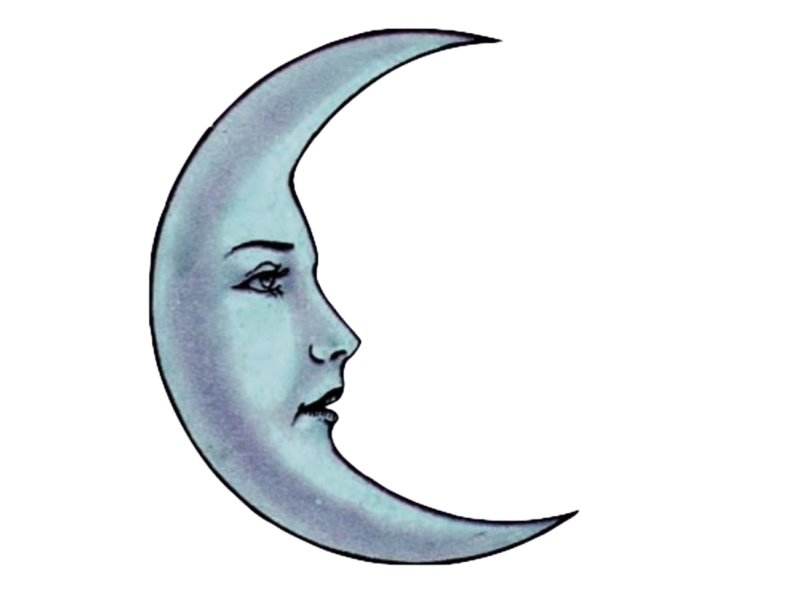
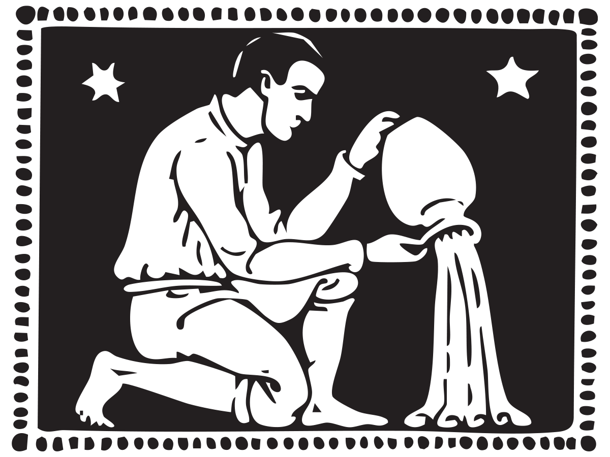

<!doctype html>
<html>
    <head> 
    <title>-</title>
    <link rel="stylesheet" href="main.css">
    </head>

    <body> 
        
    </body>         
</html>
<!doctype html>
<html>
<head>
    <title>Astrology Archive</title>
    <link rel="stylesheet" href="css/main.css">
   <link href='https://fonts.googleapis.com/css?family=Ballet' rel='stylesheet'>
</head>
<body>
<h1> Astro Archive </h1>
<br>

  <h2> Astrology has no more useful function than this, 
  to discover the inmost nature of a man and to bring 
  it out into his consciousness, that he may fulfil it 
  according to the law of light<br><br>
  
—Aleister Crowley</h2>

<div style="height: 200;"></div>
<div class="grid-container">
  <div class="image-grid">

    <div class="item">
      <p>Aries is a Mars-ruled Cardinal Fire sign and the first sign of the zodiac. Aries is known for initiation and independence. Symbolized by the ram, Aries moves quickly and suddenly. It sprints forward without holding back, fueled by passion and inspiration. Aries is innovative, being the first to take action with the willingness to take risks. The desire to go first and be first makes Aries competitive. Its quick movements mean that it has to think on its feet and be decisive. As a cardinal sign, Aries is quick to take off but struggles to maintain its speed, leading to burnout. Aries can also decide on things too quickly, leaving no time for analysis or debates.</p>
    </div>

    <div class="item">
     <p>Taurus is a Venus-ruled Fixed Earth sign and the second sign of the zodiac. Taurus is characterized by permanence and sensuality. Symbolized by the bull, Taurus gets things done slowly and methodically. Its pace makes it gravitate towards things that stay the same. Ruled by Venus, Taurus is concerned with value judgements, investing in things that have substance. It cultivates sensual pleasures like food, music, and wine. Though resilient, Taurus struggles with change. It clings to familiarity, oftentimes refusing to lower its standards once they’ve been raised.</p>
    </div>

    <div class="item">
      <p>Gemini is a Mercury-ruled Mutable Air sign and the third sign of the zodiac. Gemini deals with stimulation and adaptability. Symbolized by the twins, Gemini engages in dialogues with itself and absorbs information from multiple sources. Gemini wants to do everything. Its detail-oriented nature allows it to satisfy its curiosity and understand how things work. Gemini makes connections in order to find solutions. Its desire to stay stimulated can leave it scattered though. Gemini is also prone to instability and volatility, moving too quickly in multiple directions.</p>
    </div>

    <div class="item">
    <p>Cancer is a Moon-ruled Cardinal Water sign and the fourth sign of the zodiac. Cancer is known for cultivation and protection. Symbolized by the crab, Cancer defends that which is essential and exposed. It walks sideways, approaching issues indirectly. Cancer is tuned to safety and tries to tie itself to others in order to establish a place for itself. Cancer nurtures people while also seeking out nurturance. It’s emotionally generous in its nature, offering space and support for others when they need it. Tuned to the cycles of the moon, Cancer is prone to fluctuation. It can also manipulate emotions when it feels unsafe.</p>
    </div>

    <div class="item">
  <p>Leo is a Sun-ruled Fixed Fire sign and the fifth sign of the zodiac. Leo is characterized by creativity and regality. Symbolized by the Lion, it expresses courage and tries to maintain a consistent image. Leo has the ability to garner attention and shift the focus onto others at will. Being the focal point of everyone’s attention, Leo also takes on leadership qualities. It aims for authentic self-expression, though it’s sensitive to external feedback. Leo’s role as a leader means that it can take the spotlight away from the things that matter to others.</p>
    </div>

    <div class="item">
  <p>Virgo is a Mercury-ruled Mutable Earth sign and the sixth sign of the zodiac. Virgo deals with discernment and helpfulness. Symbolized by the Virgin, Virgo aims for a unique definition of “purity.” It assimilates, digests, and applies information. It diagnoses things, makes things more efficient, and has an overall fixation on quality. Virgo is incredibly skilled and tries to make things that are useful. Detail-oriented and critical, Virgo can struggle with seeing the bigger picture. Its aim towards “purity” can result in a perfectionist nature.</p>
    </div>

    <div class="item">
    <p>Libra is a Venus-ruled Cardinal Air sign and the seventh sign of the zodiac. Libra is known for harmony and justice. Symbolized by the scales, it aims to bring environments into stability. Libra initiates conversations, collects opinions, stimulates minds, and understands issues from multiple perspectives. Libra exposes all viewpoints, and when one is lacking, it makes up for that lack by taking on a contrarian stance. Libra is also an aesthetic sign, making places more vibrant and visually cohesive. Though Libra is the judge, it’s not the jury or the executioner. Libra struggles with being decisive, never settling on a single idea or perspective. It can also struggle to follow through with social connections.</p>
    </div>

    <div class="item">
      <p>Scorpio is a Mars-ruled Fixed Water sign and the eighth sign of the zodiac. Scorpio is characterized by depth and resilience. Symbolized by the scorpion, it is both armored and armed, capable of standing on the offensive and the defensive. Scorpio undergoes intense transformation and can withstand being in harsh environments. It’s able to get to the bottom of issues and uncover secrets. It also has a bottomless well of emotional depth, feeling things with an intensity that cannot be dismissed. Though it’s able to uncover secrets, Scorpio holds many secrets of its own. It’s often left unable to express the full scope of what it feels.</p>
    </div>

    <div class="item">
      <p>Sagittarius is a Jupiter-ruled Mutable Fire sign and the ninth sign of the zodiac. Sagittarius deals with inspiration and inclusion. Symbolized by the archer, it shoots towards the horizon of potential and possibility. Sagittarius is defined by big picture thinking and wants everyone to follow along as it moves towards its goal. Sagittarius is free-spirited and empowered by the chase towards something greater. It often holds onto truths that can’t be proven, though, and it can be dogmatic. Sagittarius often struggles to commit to things.</p>
    </div>

    <div class="item">
      <p>Capricorn is a Saturn-ruled Cardinal Earth sign and the tenth sign of the zodiac. Capricorn is known for responsibility and business-like conduct. Symbolized by the goat, Capricorn buckles down and does what needs to be done regardless of obstacles. It puts forethought into things, usually focusing on how to deal with issues while restricted by certain rules. Capricorn tends to represent time and ancient things, sticking to tradition. The Saturnian nature of Capricorn makes it separate itself from others. Its focus on tradition can narrow the lens, making it incapable of seeing how things could improve through change.</p>
    </div>

    <div class="item">
    <p>Aquarius is a Saturn-ruled Fixed Air sign and the eleventh sign of the zodiac. Aquarius is characterized by intelligence and innovation. Symbolized by the water bearer, it aims to control what direction the collective moves in. Aquarius looks to the unknown, trying to figure out the rules that govern things we don’t understand. It goes against the status quo with the desire to create a new one, focusing on how things can work differently from what people are used to. Aquarius is also rigid in its desire for change, making it difficult to shift its perspective after it has settled on a new normal.</p>
    </div>

    <div class="item">
  <p>Pisces is a Jupiter-ruled Mutable Water sign and the twelfth sign of the zodiac. Pisces deals with expansion and idealism. Symbolized by the fish, it sits in an endless expanse of cohesion and inclusion. Pisces aims to connect everyone in a coherent way, even if it means accepting contradictions. Pisces is intuitive, sensing other people’s thoughts and drives, and is willing to sacrifice in the name of the greater good. It gravitates towards the things that fill the void caused by a lack of togetherness. The sensitivity of Pisces can cause it to take in too much, though, and its lack of boundaries leaves it struggling to adjust to existing structures.</p>
    </div>

  </div>
</div>

<ul class="sources-list">
  <li><a href="https://www.reddit.com/r/astrology/comments/pw52g1/basic_descriptions_for_the_signs_of_the_zodiac/" target="_blank">Zodiac Descriptions</a></li>
  <li><a href="https://www.are.na/abigail-nadolski/web-design-passion-project-archive" target="_blank">Are.na Image Archive</a></li>
  <li><a href="https://www.astro.com/cgi/hk.cgi?lang=e" target="_blank">Astro.com</a></li>
</ul>

</body>
</html>